#install.packages("usdata")
library(usdata)Computational Statistics: Class Notes
R notes on data cleaning, plots, EDA and regression
These notes follow the Computational Statistics class in R. They start with loading and cleaning data, then move to exploratory analysis and plots, and finish with regression.
Loading datasets and library
# Load a dataset named as county data sets
county# A tibble: 3,142 × 15
name state pop2000 pop2010 pop2017 pop_change poverty homeownership
<chr> <fct> <dbl> <dbl> <int> <dbl> <dbl> <dbl>
1 Autauga County Alab… 43671 54571 55504 1.48 13.7 77.5
2 Baldwin County Alab… 140415 182265 212628 9.19 11.8 76.7
3 Barbour County Alab… 29038 27457 25270 -6.22 27.2 68
4 Bibb County Alab… 20826 22915 22668 0.73 15.2 82.9
5 Blount County Alab… 51024 57322 58013 0.68 15.6 82
6 Bullock County Alab… 11714 10914 10309 -2.28 28.5 76.9
7 Butler County Alab… 21399 20947 19825 -2.69 24.4 69
8 Calhoun County Alab… 112249 118572 114728 -1.51 18.6 70.7
9 Chambers Coun… Alab… 36583 34215 33713 -1.2 18.8 71.4
10 Cherokee Coun… Alab… 23988 25989 25857 -0.6 16.1 77.5
# ℹ 3,132 more rows
# ℹ 7 more variables: multi_unit <dbl>, unemployment_rate <dbl>, metro <fct>,
# median_edu <fct>, per_capita_income <dbl>, median_hh_income <int>,
# smoking_ban <fct>head(county)# A tibble: 6 × 15
name state pop2000 pop2010 pop2017 pop_change poverty homeownership
<chr> <fct> <dbl> <dbl> <int> <dbl> <dbl> <dbl>
1 Autauga County Alaba… 43671 54571 55504 1.48 13.7 77.5
2 Baldwin County Alaba… 140415 182265 212628 9.19 11.8 76.7
3 Barbour County Alaba… 29038 27457 25270 -6.22 27.2 68
4 Bibb County Alaba… 20826 22915 22668 0.73 15.2 82.9
5 Blount County Alaba… 51024 57322 58013 0.68 15.6 82
6 Bullock County Alaba… 11714 10914 10309 -2.28 28.5 76.9
# ℹ 7 more variables: multi_unit <dbl>, unemployment_rate <dbl>, metro <fct>,
# median_edu <fct>, per_capita_income <dbl>, median_hh_income <int>,
# smoking_ban <fct>For a numeric variable we do not know the range (minimum and maximum) in advance, so we check it first.
my_data<- county
# Copy the data into a shorter name so it is easy to use.# attach() lets us use column names directly, without writing my_data$ every time.
attach(my_data)# Packages needed for these notes (install once, then load them).
#install.packages("ggplot2")
#install.packages("tidyr")
#install.packages("tidyverse")
#install.packages("dplyr")
#install.packages("rio")
#install.packages("labelled")
#install.packages("stargazer")
#install.packages("janitor")library(ggplot2)
library(tidyr)
library(dplyr)
library(rio)
library(tidyverse)
library(labelled)
library(stargazer)
library(janitor)# plot
my_data |> ggplot(aes(median_hh_income, unemployment_rate))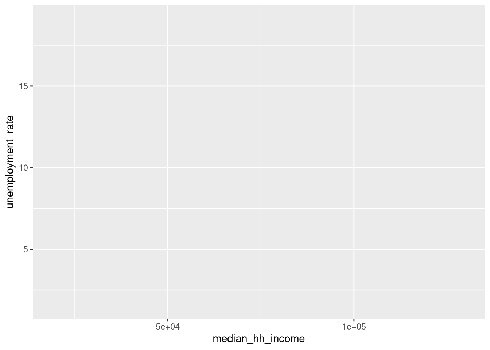
my_data |> ggplot(aes(median_hh_income, unemployment_rate))+geom_point()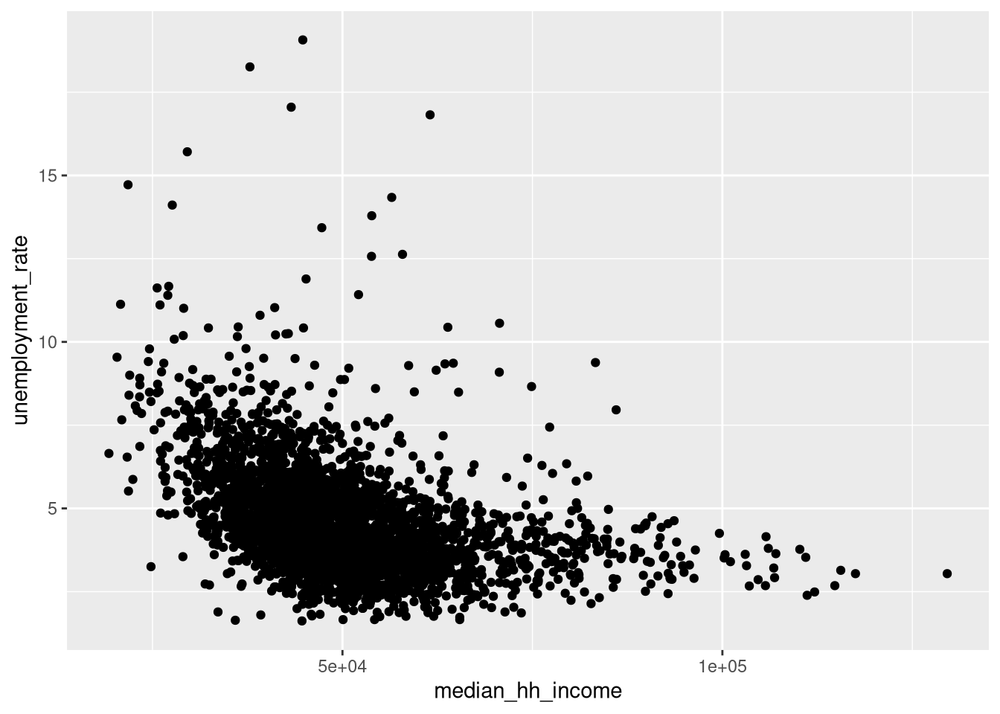
# creating linear line using "lm"
my_data |> ggplot(aes(median_hh_income, unemployment_rate))+geom_point()+geom_smooth(method = "lm", se= F)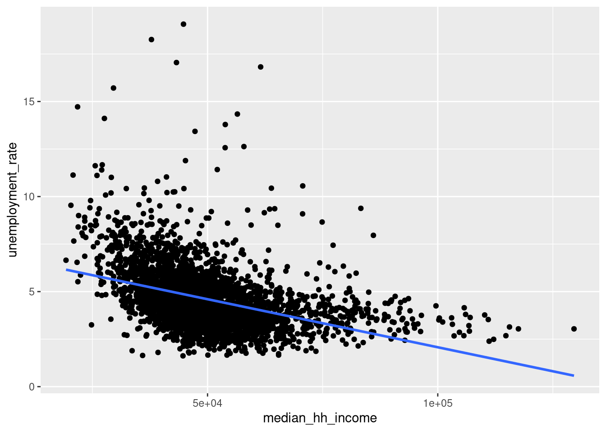
The scatter plot shows a negative association. The flatter the line, the weaker the association.
boxplot(my_data$median_edu)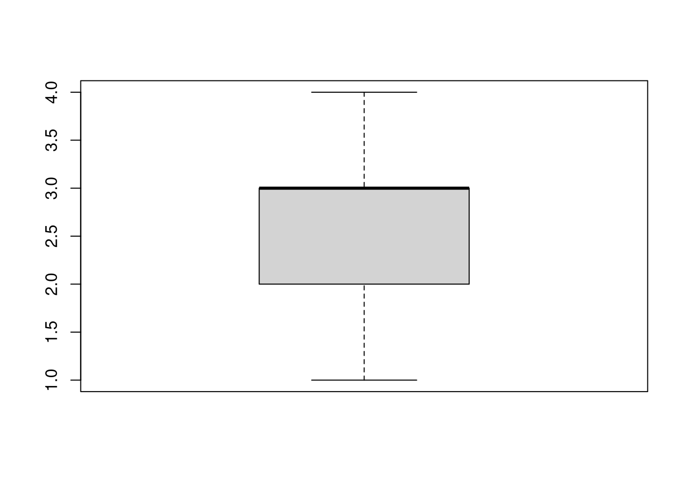
# Step 1: keep only the variables we need.
my_data_1<- my_data|> select(median_hh_income, poverty, metro, median_edu)
# To drop variables instead, use select(-variable).
attach(my_data_1)Rename the variables we want to change.
my_data_1<- my_data_1 |> rename( median_inc = median_hh_income)
# Syntax: rename(new_name = old_name).# var_label() tells us what a variable is about.
var_label(my_data_1$median_inc)NULL# This variable has no label yet, so we assign one.
# Assign the label (a short description).
var_label(my_data_1$median_inc) <- "median household income"
# In a group project, every variable should carry a label like this.# Data cleaning part
# Clean the variables: outliers must be found and removed.
# We need the janitor package for this.
tabyl(metro) # frequency table of a categorical variable, to spot unusual categories metro n percent valid_percent
no 1974 0.6282622533 0.6288627
yes 1165 0.3707829408 0.3711373
<NA> 3 0.0009548059 NAtabyl(my_data_1$median_edu) # frequency table of the education variable my_data_1$median_edu n percent valid_percent
below_hs 2 0.0006365372 0.0006369427
hs_diploma 1397 0.4446212603 0.4449044586
some_college 1695 0.5394653087 0.5398089172
bachelors 46 0.0146403565 0.0146496815
<NA> 2 0.0006365372 NA# Outliers are always replaced with NA.# For a continuous variable, start with the summary.
summary(my_data_1$median_inc) Min. 1st Qu. Median Mean 3rd Qu. Max. NAs
19264 41126 48072 49765 55771 129588 2 # The summary shows the spread (range) of the data, but not clearly the outliers.
# Boxplots and histograms show the outliers.
boxplot(my_data_1$median_inc) 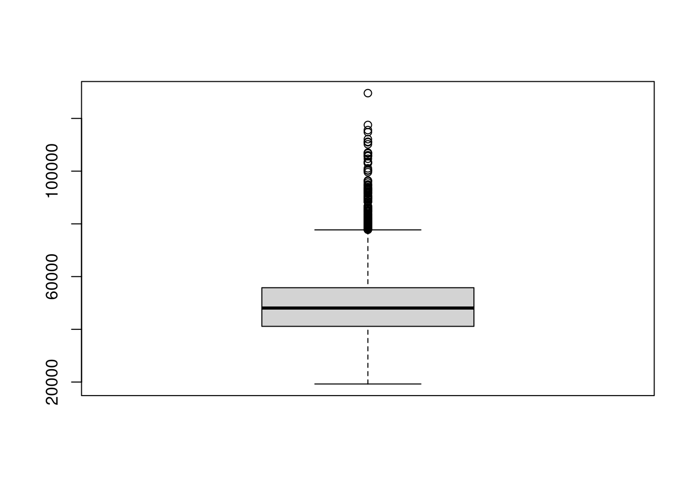
# The same check with a histogram.
hist(my_data_1$median_inc) 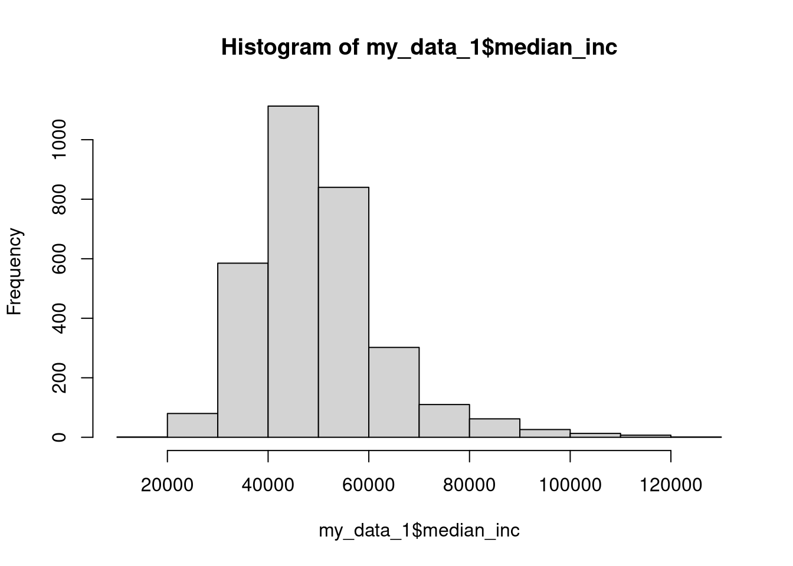
# sum() counts how many observations satisfy a condition.
sum(my_data_1$median_inc>100000, na.rm = T) # how many values are above the cut-off[1] 21# See what the plot looks like after trimming the outliers.
my_data_1 |> filter(my_data_1$median_inc>40000 & my_data_1$median_inc<100000) |> with(boxplot(median_inc))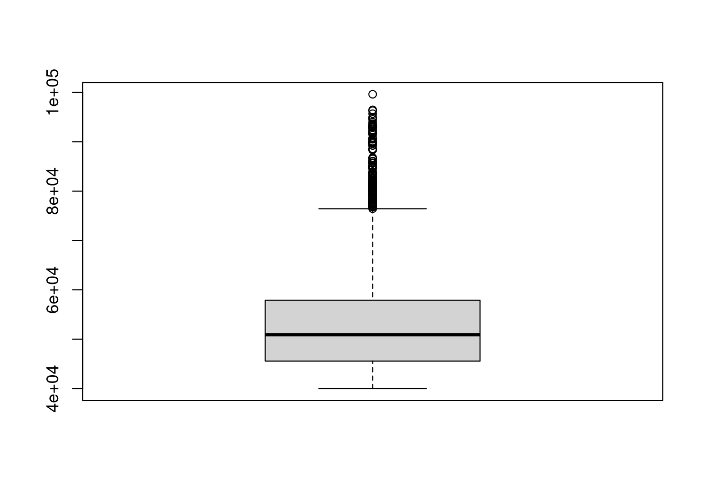
# The same with a histogram.
my_data_1 |> filter(my_data_1$median_inc>40000 & my_data_1$median_inc<100000) |> with(hist(median_inc))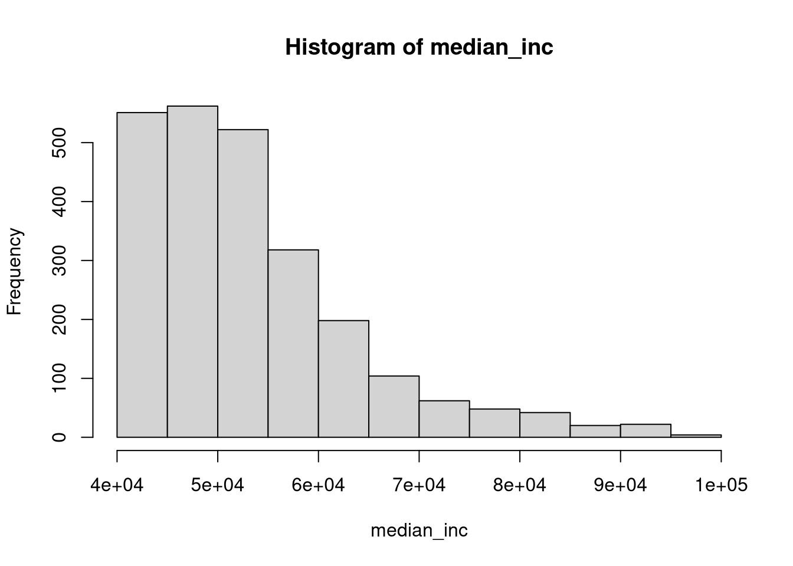
# Replace outliers by NA.
my_data_1 <- my_data_1 %>%
mutate(median_inc = ifelse(median_inc < 20000, NA, median_inc))
# Check the result
summary(my_data_1$median_inc) Min. 1st Qu. Median Mean 3rd Qu. Max. NAs
20330 41130 48073 49775 55778 129588 3 # How to create a categorical variable from a continuous variable.
# First check the summary of the variable.
my_data_1 <- my_data_1 %>% mutate(poor = labelled(
case_when(
median_inc <= 45000 ~ 1,
median_inc > 45000 ~ 0), # case_when() ends here; next we name the values (labels)
c( Yes = 1, No = 2) # c() puts the labels together
))
# labelled() gives names to the values.
summary(my_data_1$poor) Min. 1st Qu. Median Mean 3rd Qu. Max. NAs
0.0000 0.0000 0.0000 0.3874 1.0000 1.0000 3 # val_labels() shows the labels of the values (var_label() shows the label of the variable).
val_labels(my_data_1$poor)Yes No
1 2 # Create poverty categories
my_data_1 <- my_data_1 %>%
mutate(
poverty = labelled(
case_when(
poverty >= 2 & poverty <= 11 ~ 1,
poverty >= 12 & poverty <= 16 ~ 2,
poverty >= 17 & poverty <= 52 ~ 3
),
c(
Poorest = 1,
Poor = 2,
Rich = 3
)
)
)
# Check the variable
summary(my_data_1$poverty) Min. 1st Qu. Median Mean 3rd Qu. Max. NAs
1.000 1.000 2.000 2.177 3.000 3.000 371 # Check value labels
val_labels(my_data_1$poverty)Poorest Poor Rich
1 2 3 Class of 08/09/2026
# Convert factor to numeric
my_data_1<- my_data_1 %>% mutate(metro = case_when(
my_data_1$metro == "yes" ~ 1,
my_data_1$metro == "no" ~ 0
))
tabyl(my_data_1$metro) my_data_1$metro n percent valid_percent
0 1974 0.6282622533 0.6288627
1 1165 0.3707829408 0.3711373
NA 3 0.0009548059 NA# put label names back
val_labels(my_data_1$metro)<- c(yes=1, no=0)
tabyl(my_data_1$metro) my_data_1$metro n percent valid_percent
0 1974 0.6282622533 0.6288627
1 1165 0.3707829408 0.3711373
NA 3 0.0009548059 NA# Keep only the poverty range we want (and missing values).
summary(my_data_1$poverty) Min. 1st Qu. Median Mean 3rd Qu. Max. NAs
1.000 1.000 2.000 2.177 3.000 3.000 371 my_data_1<- my_data_1|> filter(poverty>1 & poverty<3 | is.na(poverty))Exploratory Data Analysis (EDA)
With the data cleaned, we now describe it using summary statistics and plots.
Summary Statistics
#install.packages("modelsummary") #install.packages("fastDummies")
library(modelsummary) # for summary statistics
library(fastDummies) # for making dummies automatically # create dummies for categorical variable
my_data_1<- dummy_cols(
my_data_1,
select_columns = "median_edu",
remove_selected_columns = F
)#install.packages("pandoc")
library(pandoc)
# summary statistics
datasummary(
metro
+median_edu_below_hs
+median_edu_hs_diploma
+median_edu_some_college
+median_edu_bachelors
+median_edu_NA ~
N+ Mean +SD+ Min+ Max,
data = my_data_1,
output = "summary_statistics.docx"
)Error in `pandoc_run()`:
! Requested Pandoc binary is not available: default# Start again from the original county data.
df1<- county# Generate categorical variable with number as levels
df1<- df1|> mutate(metro = case_when(df1$metro == "yes" ~ 1, df1$metro == "no" ~ 0))# bar plot
ggplot(df1, aes(x= metro)) +geom_bar()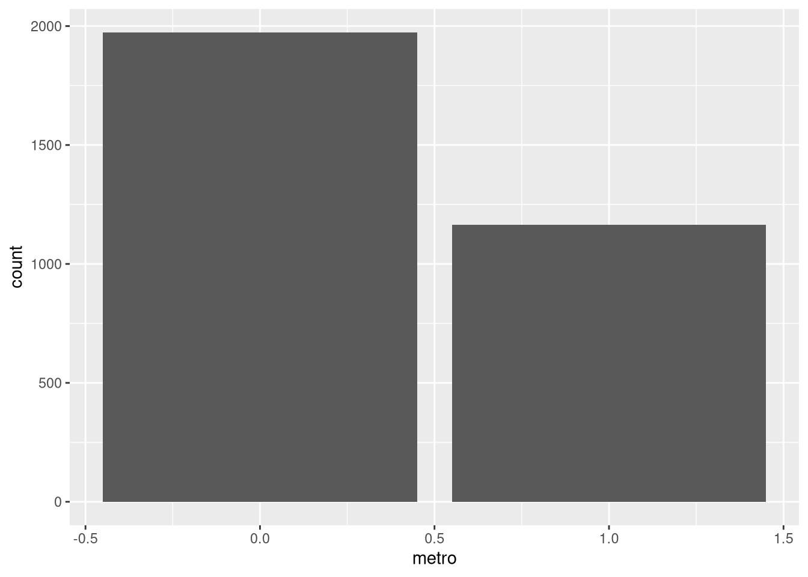
The plot is not good because R treats metro as a number. We must tell R that it is a categorical variable (a factor).
# bar plot
ggplot(df1, aes(x= factor(metro))) +geom_bar()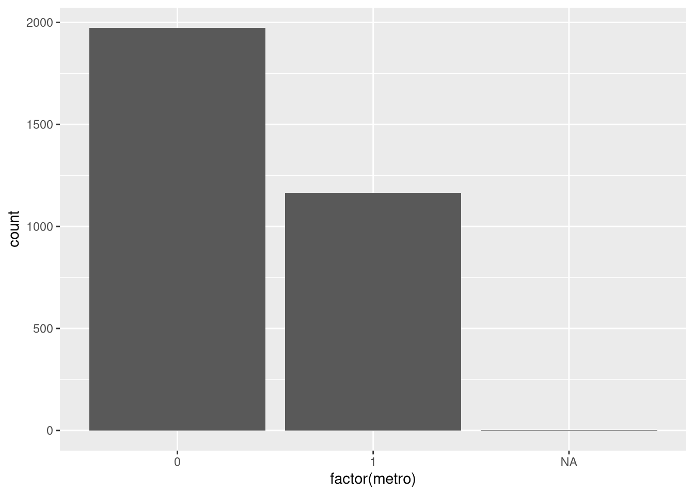
Make the plot more attractive by colouring the bars.
ggplot(df1, aes(x= factor(metro), fill=factor(metro))) +geom_bar()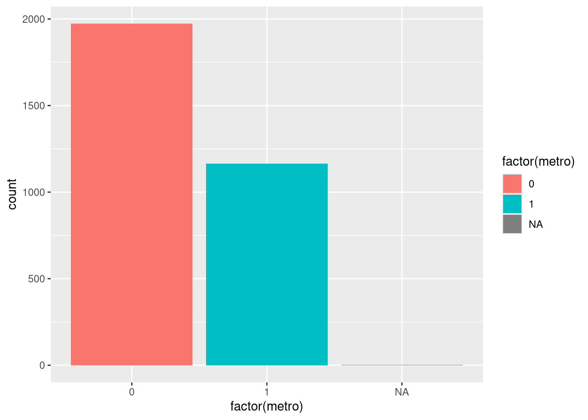
Now remove the missing values (NA) from the plot using filter().
ggplot(df1|> filter(!is.na(metro)), aes(x= factor(metro), fill=factor(metro))) +geom_bar()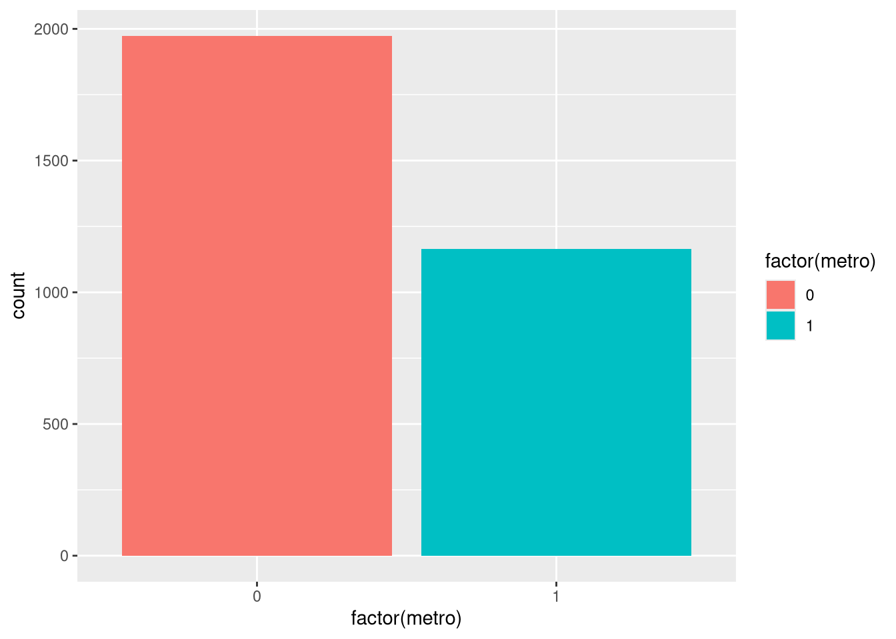
Next, clean up the axis labels.
# edit axis labels and titles
ggplot(df1|> filter(!is.na(metro)),
aes(x= factor(metro,
levels = c(0,1),
labels = c("no", "yes")),
fill=factor(metro)))+
geom_bar()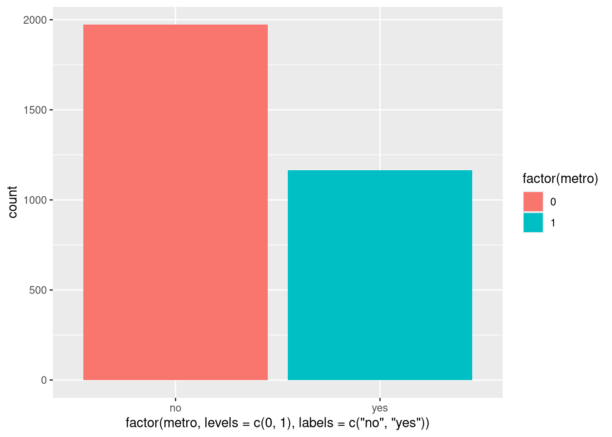
Now remove the legend, since the x-axis already shows the categories.
ggplot(df1|> filter(!is.na(metro)),
aes(x= factor(metro,
levels = c(0,1),
labels = c("no", "yes")),
fill=factor(metro)))+
geom_bar()+
theme(legend.position = "none") # we can write "none" or ""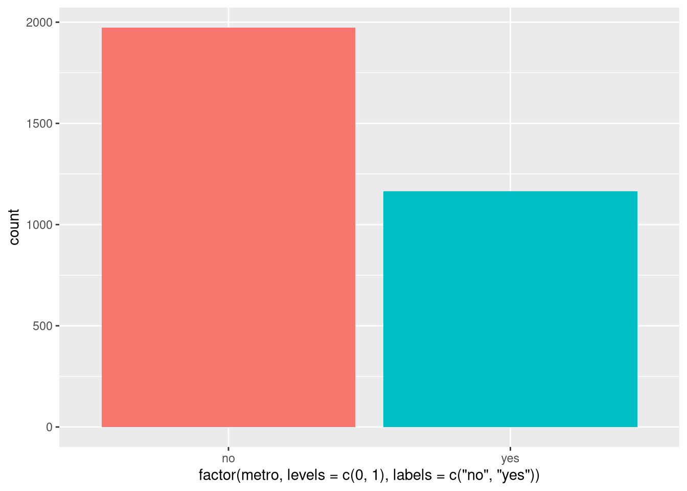
ggplot(df1|> filter(!is.na(metro)),
aes(x= factor(metro,
levels = c(0,1),
labels = c("No", "Yes")),
fill=factor(metro)))+
geom_bar()+
labs(
title = "Figure 1 : Bar Plot",
x = "Metro Status",
y = "Count",
fill= "metro")+
theme_minimal()+
theme(legend.position = "none",
plot.title = element_text(hjust = 0.5))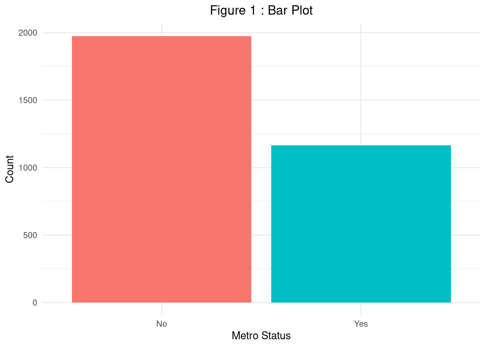
Now the same plot with proportions instead of counts.
df1|> filter(!is.na(metro))|>
count(metro)|>
mutate(prop= n/sum(n))|> # this will generate the proportion
ggplot(
aes(x= factor(metro,
levels = c(0,1),
labels = c("No", "Yes")),
y = prop,
fill=factor(metro)))+
geom_col()+
# we just have to change geom_bar() to geom_col() for proportion
labs(
title = "Figure 1 : Bar Plot",
x = "Metro Status",
y = "Count",
fill= "metro")+
theme_minimal()+
theme(legend.position = "none",
plot.title = element_text(hjust = 0.5))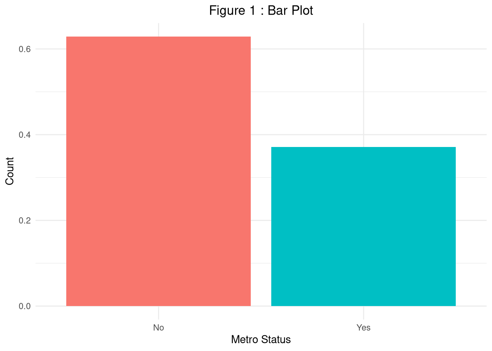
Class of 15/09/2026
#install.packages("scales")
library(scales)Grouped bars: side by side across two categories.
library(dplyr)
library(ggplot2)
df1 <- county |>
mutate(metro = case_when(metro == "yes" ~ 1, metro == "no" ~ 0))
df1 |>
filter(!is.na(metro), !is.na(median_edu)) |>
count(metro, median_edu) |>
group_by(metro) |>
mutate(
prop = n / sum(n),
top_lab = paste0(round(prop * 100, 1), "%")
) |>
ggplot(aes(x = factor(metro, levels = c(0, 1), labels = c("No", "Yes")),
y = prop,
fill = factor(median_edu))) +
geom_col(position = "dodge") +
geom_text(
aes(label = top_lab),
position = position_dodge(width = 0.9),
vjust = -0.5,
size = 3
) +
labs(
title = "Figure 1: Proportion of Median Education by Metro Status",
x = "Metro Status",
y = "Proportion",
fill = "Median Education"
) +
theme_minimal() +
theme(
plot.title = element_text(hjust = 0.5), legend.position = "right") +theme()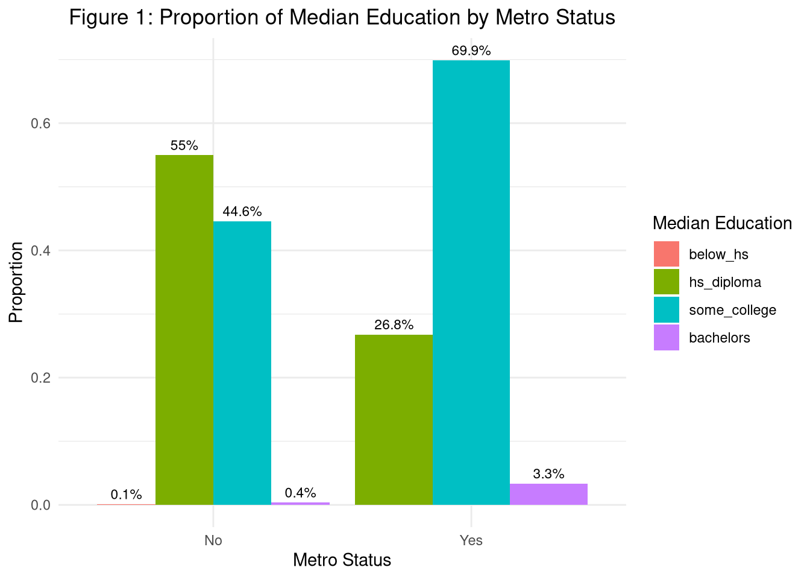
library(dplyr)
library(ggplot2)
library(flextable)
df1 |>
filter(!is.na(metro), !is.na(median_edu)) |>
count(metro, median_edu) |>
group_by(metro) |>
mutate(
prop = n / sum(n),
top_lab = paste0(round(prop * 100, 1), "%")
) |>
ggplot(aes(x = factor(metro, levels = c(0, 1),
labels = c("No", "Yes")),
y = prop,
fill = factor(median_edu))) +
geom_col(position = "stack") +
scale_y_continuous() + # <--- Added the missing '+' here!
geom_text(
aes(label = top_lab),
position = position_stack(vjust = 0.5),
size = 3,
color = "white"
) +
labs(
title = "Figure 1: Proportion of Median Education by Metro Status",
x = "Metro Status",
y = "Proportion",
fill = "Median Education"
) +
theme_minimal() +
theme(
plot.title = element_text(hjust = 0.5),
legend.position = "right"
)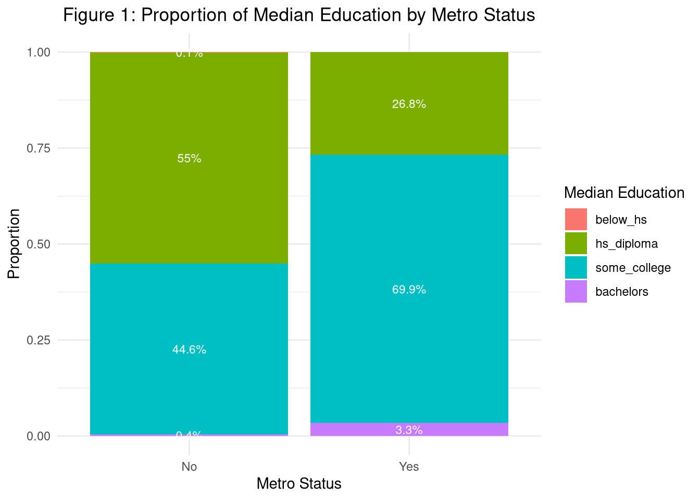
Contingency Tables
Cross tabulation of two or more categorical variables
Important
Use a contingency table only when your data and report have several categorical variables.
library(janitor)
library(flextable)ct_1<- df1|> filter(!is.na(metro), !is.na(median_edu))|>
mutate(across(c(metro, median_edu), as.factor))|>
tabyl(metro,median_edu) |>
adorn_percentages("all") |>
adorn_pct_formatting() |>
adorn_ns()ct_2<- flextable(ct_1)
save_as_docx(ct_2, path = "contg_1.docx")Pie Chart
library(dplyr)
library(ggplot2)
df1 |>
filter(!is.na(median_edu)) |>
count(median_edu) |>
mutate(
prop = n / sum(n),
top_lab = paste0(round(prop * 100, 1), "%")
) |>
ggplot(aes(x = "", y = prop, fill = factor(median_edu))) +
geom_col(width = 1, color = "white") +
coord_polar(theta = "y") + # Turns the stacked bar into a pie chart
geom_text(
aes(label = top_lab),
position = position_stack(vjust = 0.5), # Centers text in each slice
color = "white", # White text for contrast
size = 3.5 # Label text size
) +
labs(
title = "Figure: Median Education Distribution",
fill = "Median Education",
x = NULL,
y = NULL
) +
theme_void() + # Removes background grid and axis lines
theme(
plot.title = element_text(hjust = 0.5),
legend.position = "right"
)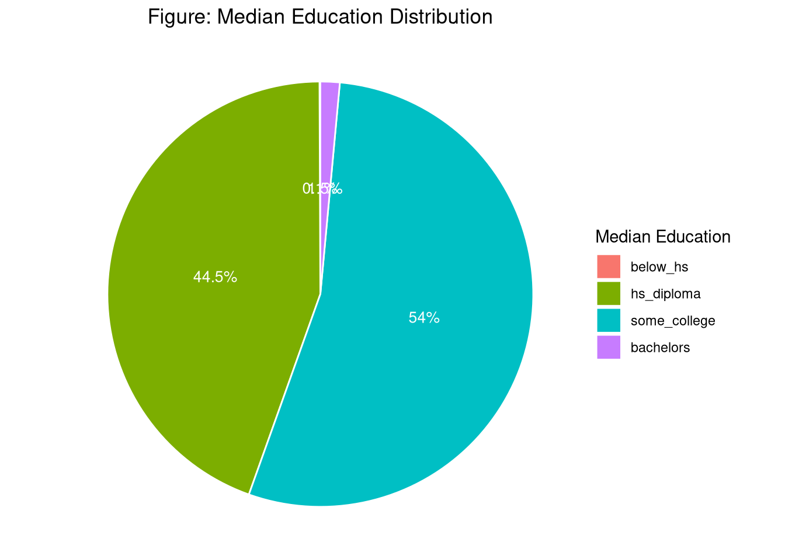
Continuous Variable
- First check the distribution of the variable (from minimum to maximum).
library(ggplot2)
library(dplyr)
df1 |>
filter(!is.na(poverty)) |>
ggplot(aes(y = poverty)) +
geom_boxplot(fill = "orange", color = "black", alpha = 0.7) +
labs(
title = "Figure: Box Plot of Poverty Rate",
y = " population in poverty",
x = NULL
) +
theme_minimal() +
theme(
plot.title = element_text(hjust = 0.5),
axis.text.x = element_blank(), # Removes unnecessary x-axis text tick
axis.ticks.x = element_blank()
)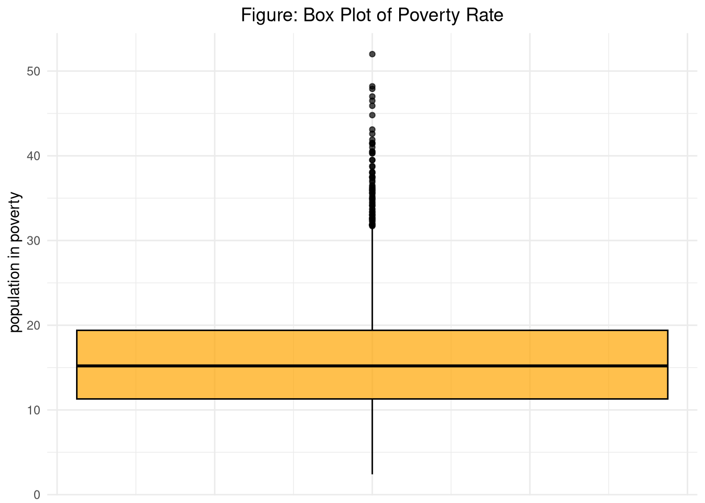
The IQR (inter-quartile range) holds the middle 50% of the data.
We can check for outliers by plotting a box plot.
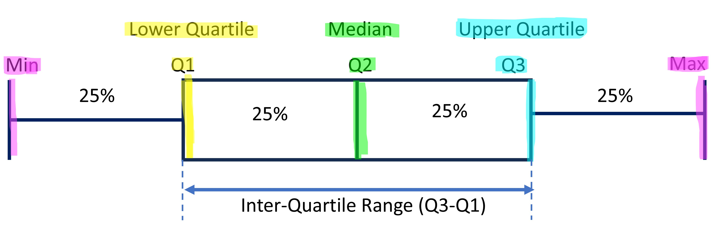
library(ggplot2)
library(dplyr)
df1 |>
filter(!is.na(poverty), poverty < 30) |>
ggplot(aes(y = poverty)) +
geom_boxplot(fill = "orange", color = "black", alpha = 0.7) +
labs(
title = "Figure: Box Plot of Poverty Rate",
y = " population in poverty",
x = NULL
) +
theme_minimal() +
theme(
plot.title = element_text(hjust = 0.5),
axis.text.x = element_blank(),
axis.ticks.x = element_blank()
)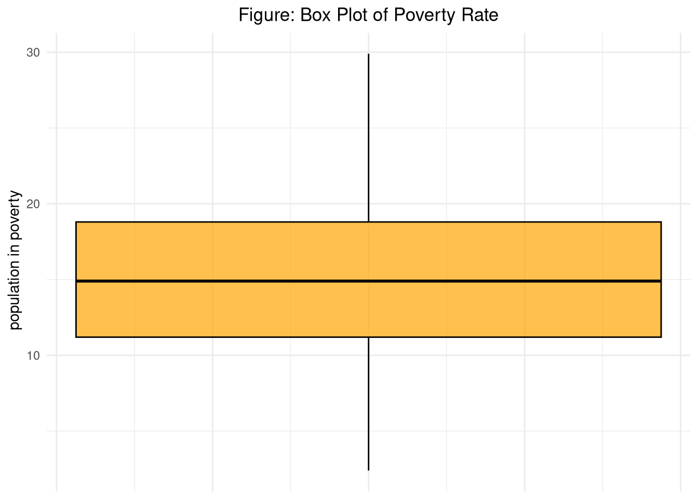
- A frequency polygon plots raw frequency (counts) on the Y-axis, whereas a density plot plots probability density (proportions) where the total area under the curve equals 1.
Class of 21/09/2026
data1 <- data.frame(
x = c(1, 3, 5, 7),
y = c(4, 2, 6, 4))
data1 x y
1 1 4
2 3 2
3 5 6
4 7 4cor(data1$x, data1$y)[1] 0.3162278Store the correlation in an object r, then print it and use it in the plot title:
r <- cor(data1$x, data1$y)
print(r)[1] 0.3162278plot(data1$x, data1$y,
main = paste("Scatter Plot (r =", round(r, 3), ")"),
xlab = "X",
ylab = "Y",
pch = 19,
col = "blue")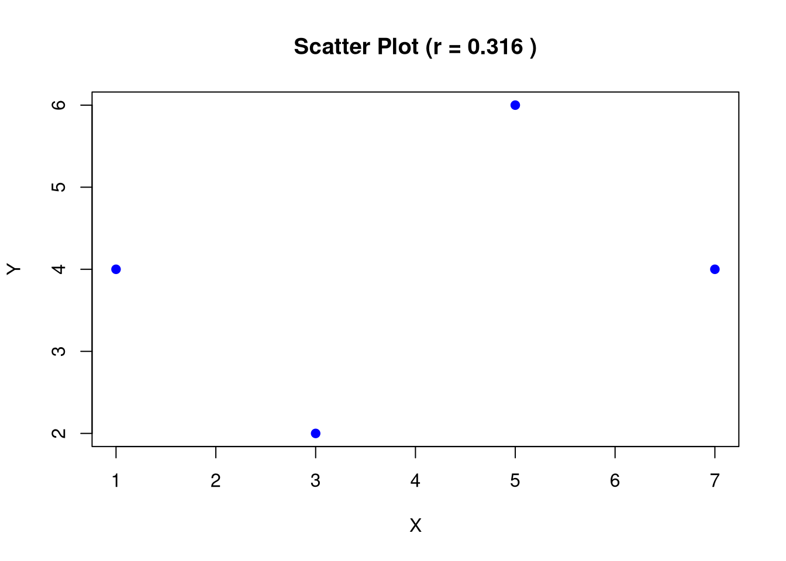
## Task: from the poverty variable, create a categorical variable.
## Category 1 (Poorest) = at or below the median; category 2 (Poor) = between the median and the 3rd quartile; category 3 (Rich) = above the 3rd quartile.
# Then draw a bar plot of median_edu against these 3 categories: x-axis = Poorest, Poor, Rich; y-axis = percentage.library(ggplot2)
library(tidyr)
library(tidyverse)
library(dplyr)
library(rio)
library(labelled)
library(stargazer)
library(janitor)
df1 <- df1 %>%
mutate(
poverty_cat = labelled(
case_when(
poverty <= median(poverty, na.rm = TRUE) ~ 1,
poverty > median(poverty, na.rm = TRUE) &
poverty <= quantile(poverty, 0.75, na.rm = TRUE) ~ 2,
poverty > quantile(poverty, 0.75, na.rm = TRUE) ~ 3),
c(Poorest = 1,Poor = 2,Rich = 3)))df1 |>
filter(!is.na(poverty_cat), !is.na(median_edu)) |>
count(poverty_cat, median_edu) |>
group_by(poverty_cat) |>
mutate(
prop = n / sum(n),
top_lab = paste0(round(prop * 100, 1), "%")) |>
ggplot(
aes(
x = factor(
poverty_cat,
levels = c(1, 2, 3),
labels = c("Poorest", "Poor", "Rich")),
y = prop,
fill = factor(median_edu))) +
geom_col(position = "dodge") +
geom_text(
aes(
label = top_lab),
position = position_dodge(width = 0.9),
vjust = -0.5,
size = 3) +
scale_y_continuous(
labels = function(x) paste0(x * 100, "%")) +
labs(
title = "Percentage of Median Education by Poverty Category",
x = "Poverty Category",
y = "Percentage",
fill = "Education Level") +
theme_minimal() +
theme(
plot.title = element_text(hjust = 0.5),
legend.position = "right")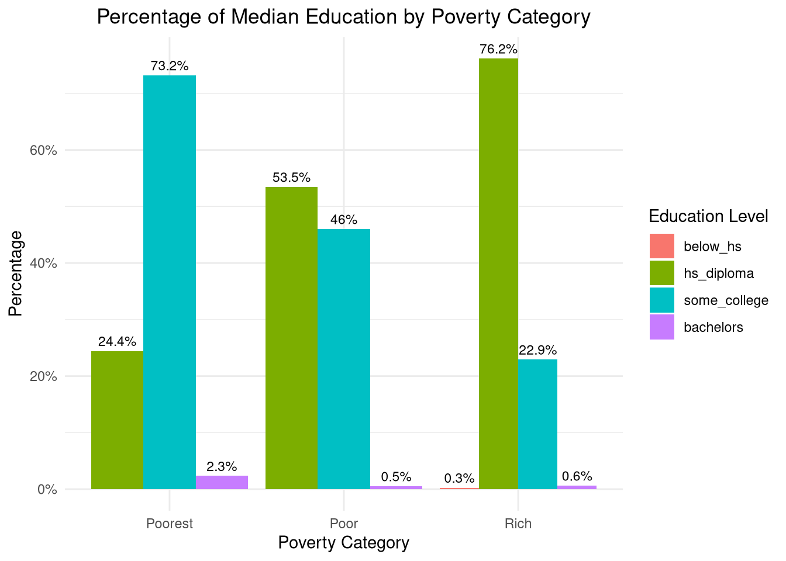
Class of 12/10/2026: Regression
Now we move from describing the data to modelling the relationship between variables.
library(openintro)
library(tibble)
library(dplyr)
library(tidyr)
library(tidyverse)
library(ggplot2)
library(rio)
library(labelled)
library(stargazer)
library(janitor)
library(purrr)
library(rlang)
library(lobstr)
library(scales)
library(flextable)
library(ivo.table)
library(modelsummary)
library(fastDummies)
library(haven)df<- loans_full_schema
attach(loans_full_schema)# Dependent variable - left side and independent variable right side
reg_1<- lm(loans_full_schema$loan_amount ~ loans_full_schema$annual_income, data = df)
reg_1
Call:
lm(formula = loans_full_schema$loan_amount ~ loans_full_schema$annual_income,
data = df)
Coefficients:
(Intercept) loans_full_schema$annual_income
1.227e+04 5.167e-02 stargazer(reg_1, type = "text")
===============================================
Dependent variable:
---------------------------
loan_amount
-----------------------------------------------
annual_income 0.052***
(0.002)
Constant 12,268.680***
(154.006)
-----------------------------------------------
Observations 10,000
R2 0.105
Adjusted R2 0.105
Residual Std. Error 9,744.378 (df = 9998)
F Statistic 1,178.036*** (df = 1; 9998)
===============================================
Note: *p<0.1; **p<0.05; ***p<0.01- Export the results
stargazer(reg_1,
omit.stat = c("f", "ser"),
type = "text",
out = "Results/reg_1.ref")
=========================================
Dependent variable:
---------------------------
loan_amount
-----------------------------------------
annual_income 0.052***
(0.002)
Constant 12,268.680***
(154.006)
-----------------------------------------
Observations 10,000
R2 0.105
Adjusted R2 0.105
=========================================
Note: *p<0.1; **p<0.05; ***p<0.01We are checking the relationship between annual income and loan amount (we fit a line).
Interpretation of the intercept: the predicted loan amount when income is 0 (when the independent variable is 0, what is the value of the dependent variable).
The slope is positive: loan amount and annual income move in the same direction. If income increases by 1 unit, the loan amount increases by 0.052 units. 0.052 is the magnitude, and we must always mention the unit.
Constant: at zero income, the predicted loan amount is 12,268.680 units.
R²: income explains only 10.5% of the variation in the loan amount. The remaining ~90% of the variation is not explained by this model.
Plot the fitted line ( OLS line )
ggplot(df, aes(
x = annual_income,
y = loan_amount ))+
geom_point()+
geom_smooth(
method = "lm",
intercept = coef(reg_1)[1], # coef from the regression the 1st coeff means intercept
slope = coef(reg_1)[2], # 2nd means the slope
color = "red",
linewidth = 1)+
theme_minimal()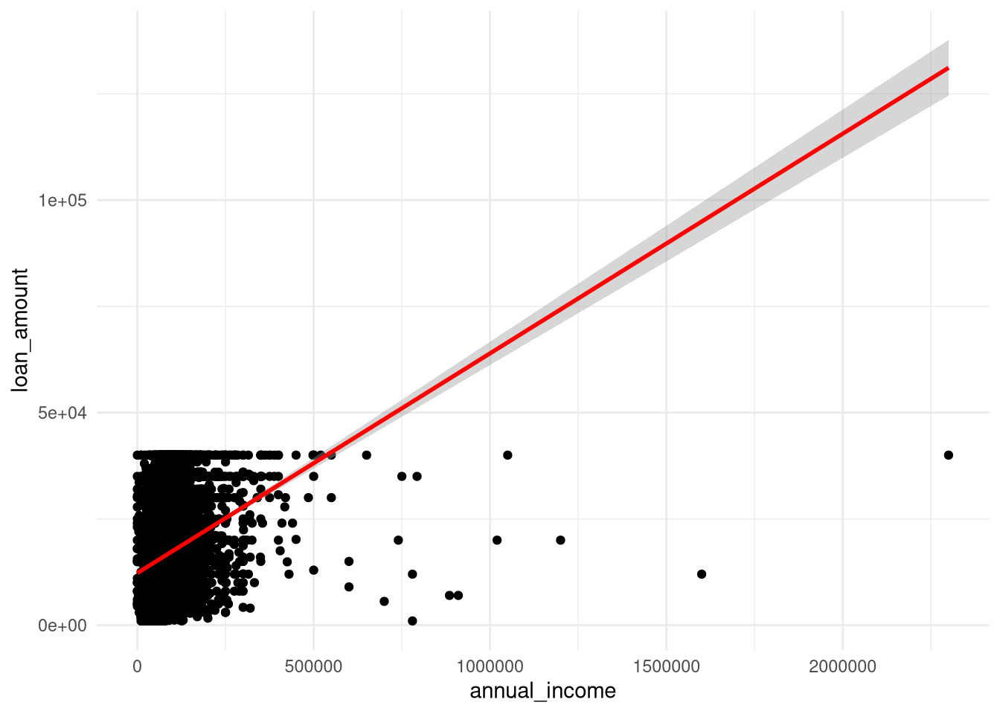
# now we can plot using abline
ggplot(df, aes(
x = annual_income,
y = loan_amount ))+
geom_point()+
geom_abline(
intercept = coef(reg_1)[1], # coef from the regression the 1st coeff means intercept
slope = coef(reg_1)[2], # 2nd means the slope
color = "red",
linewidth = 1)+
theme_minimal()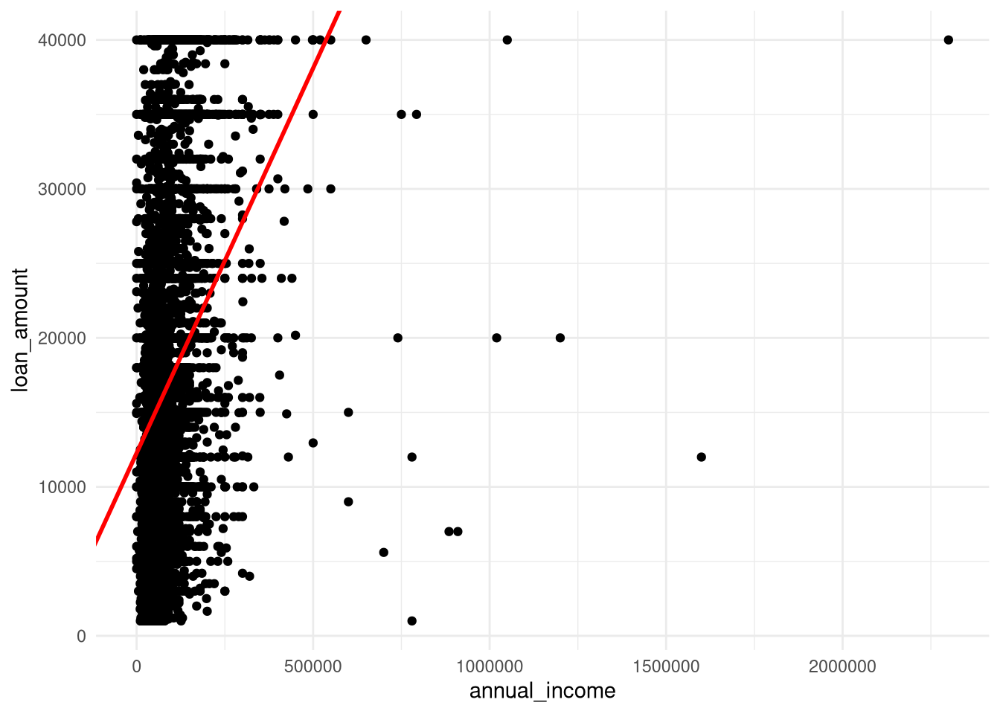
Now a regression with a categorical variable
- we use factor() for categorical variable ( in case of regression )
reg_2<- lm(loans_full_schema$loan_amount ~ factor(homeownership), data = df)
reg_2
Call:
lm(formula = loans_full_schema$loan_amount ~ factor(homeownership),
data = df)
Coefficients:
(Intercept) factor(homeownership)OWN
18129 -2445
factor(homeownership)RENT
-3723 stargazer(reg_2, type = "text")
=====================================================
Dependent variable:
---------------------------
loan_amount
-----------------------------------------------------
factor(homeownership)OWN -2,445.053***
(312.644)
factor(homeownership)RENT -3,722.757***
(219.682)
Constant 18,128.980***
(146.738)
-----------------------------------------------------
Observations 10,000
R2 0.029
Adjusted R2 0.028
Residual Std. Error 10,154.680 (df = 9997)
F Statistic 147.072*** (df = 2; 9997)
=====================================================
Note: *p<0.1; **p<0.05; ***p<0.01Individuals who own their house have a loan amount that is 2,445.053 lower than the benchmark category, MORTGAGE (the omitted category).
One category is left out, and every coefficient is compared with this reference category.
Class of 27/10/2026
df$residuals <- residuals(reg_1)
# add the residuals to our data frame# now plotting the residuals
ggplot(df,
aes( x= df$annual_income, y = df$residuals))+
geom_point() +
geom_smooth(method = "lm",
se = F)+
labs(x = "Annual Income",
y = "Residuals",
title = "Residuals vs Annual Income")+
theme_minimal()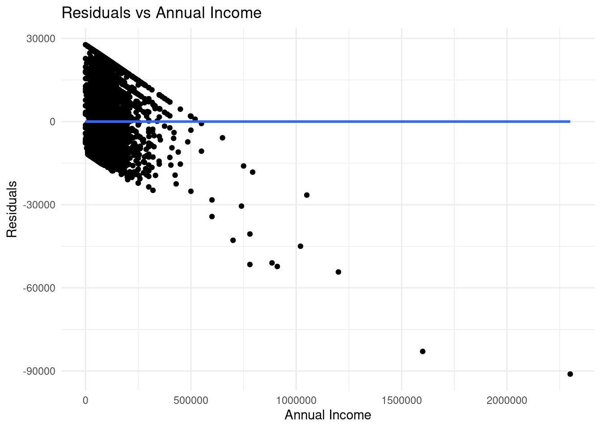
The expected value of the residuals given X is zero, so the line through the residuals is horizontal: positive and negative residuals cancel out. E(u|X) = 0.
The average of the residuals is always 0.
Now we are looking at categorical variable regression model
reg_2<- lm(df$annual_income ~ factor(df$homeownership), data = df)
# here homeownership is a categorical variable stargazer(reg_2,
omit.stat = c("f", "ser"),
type = "text",
out = "Results/reg_1.ref")
==============================================
Dependent variable:
---------------------------
annual_income
----------------------------------------------
homeownership)OWN -19,939.340***
(1,962.034)
homeownership)RENT -23,692.390***
(1,378.644)
Constant 91,060.470***
(920.875)
----------------------------------------------
Observations 10,000
R2 0.031
Adjusted R2 0.031
==============================================
Note: *p<0.1; **p<0.05; ***p<0.01If a variable has k categories, the regression reports (k-1) coefficients: one category is automatically omitted and serves as the benchmark.
The constant is the mean of the dependent variable for the benchmark category (all dummies equal to 0).
Those who own their home have a loan amount that is 2,445 lower than those with a mortgage.
# create dummy
df<- df|> filter(!is.na(df$homeownership)) |> mutate(
home_dummy = case_when(homeownership == "MORTGAGE" ~ 1,
homeownership == "OWN" ~ 0,
homeownership == "RENT"~ 0
)
)reg_3 <- lm(df$loan_amount ~ factor(df$home_dummy), data = df)stargazer(reg_3,
omit.stat = c("f", "ser"),
type = "text",
out = "Results/reg_1.ref")
========================================
Dependent variable:
---------------------------
loan_amount
----------------------------------------
home_dummy)1 3,391.010***
(203.426)
Constant 14,737.970***
(140.776)
----------------------------------------
Observations 10,000
R2 0.027
Adjusted R2 0.027
========================================
Note: *p<0.1; **p<0.05; ***p<0.01Multiple Regression
We have two or more independent variables.
The explanatory power increases, and so does R².
Which independent variables should we include? Suppose we have 5 candidate variables, all related to the dependent variable. We cannot include everything, so we use the stepwise method.
Stepwise selection has two versions: (i) backward and (ii) forward.
Backward: start with all variables and remove one at a time (first v5, then v4, and so on), checking the model fit (we look at R²) after each step.
Drop the variable whose removal gives the lowest fit, and keep the model where the fit is highest. This is the backward elimination method. Forward selection is the opposite: we start with no variables and add them one by one, and keep the model where R² is highest.
Outliers in linear regression
An outlier is a point or a group of points that stands out from the rest of the data.
Influential points: outliers that change the slope of the line. These are the most harmful ones.
If a point is in line with the bivariate model, it will not influence the least squares line (the slope stays the same).
Good practice: report one model with the outlier and one without it.
Class of 02/11/2026
Multiple Regression Model
Example: Grades ~ Hours, with coefficient 0.7 and R² = 0.32. There is only one independent variable (hours) explaining the dependent variable (grades).
If we include more independent variables, the new model explains more variation, and its R² cannot be lower than that of model 1 (not less than 0.32).
In multiple regression we do not rely only on R², because R² also rises when we add irrelevant variables. So we use a new measure: adjusted R².
When we add an independent variable, R² never decreases, but adjusted R² may decrease.
Difference between R² and adjusted R²:
The core equations
RSS (Residual Sum of Squares): Measures the absolute error unexplained by the regression model. \[\text{RSS} = \sum_{i=1}^{n} (y_i - \hat{y}_i)^2 = \sum_{i=1}^{n} (y_i - \hat{\beta}_0 - \hat{\beta}_1 x_{1i} - \dots - \hat{\beta}_k x_{ki})^2\]
TSS (Total Sum of Squares): Measures the total variance present in the data relative to the sample mean. \[\text{TSS} = \sum_{i=1}^{n} (y_i - \bar{y})^2\]
The Degrees of Freedom (why \(n - k\) and \(n - 1\))
To convert raw sums of squares into true, unbiased variance metrics, we must scale them by their respective Degrees of Freedom (DoF):
- RSS is divided by \((n - k )\)
- \(n\) = Total sample size (number of data observations).
- \(k\) = Number of independent predictor variables ( \(\hat{\beta}_0\) ,\(\hat{\beta}_1, \hat{\beta}_2, \dots, \hat{\beta}_k\)).
- TSS is divided by \((n - 1)\)
- Mathematical Rule: When calculating the total baseline variance before adding predictors, you only estimate one single parameter from the data: the sample mean (\(\bar{y}\)). Losing that \(1\) degree of freedom leaves you with exactly \((n - 1)\).
Combining these components yields the complete mathematical expression for Adjusted \(R^2\): \[\text{Adjusted } R^2 = 1 - \frac{\frac{\text{RSS}}{n - k }}{\frac{\text{TSS}}{n - 1}}\]
Standard errors
The standard deviation of the estimator.
If we repeat the sampling process many times, we get a distribution of \(\hat{\beta}_k\), and its standard deviation is the standard error.
The standard error of \(\hat{\beta}\) is linked to the residuals \(\hat{u}\): it is calculated from the errors.
(Notes to be completed.)